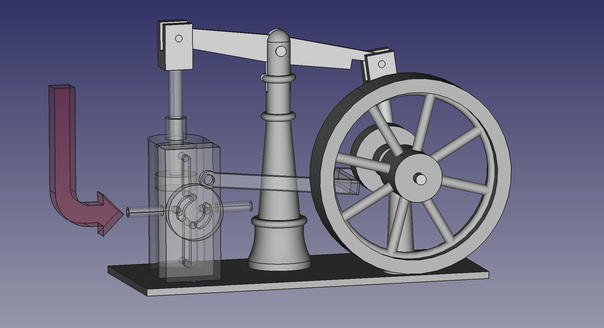

🎥 Video: How a beam steam engine works
📖 What is a beam engine?
A beam engine is one of the earliest types of steam engine, first used in the 18th century to pump water out of mines. The piston pushes a rocking beam that pivots overhead. The beam drives a connecting rod and crank, which turn the flywheel and change the piston's up-and-down motion into rotation.
🔧 About this model
The original miniature beam steam engine was designed by Lutz Hielscher. I bought one on eBay, measured it by hand and rebuilt it as a FreeCAD assembly. I made the model for an educational YouTube video that explains how a steam engine works.
This model may be useful to:
- 🎓 Students and teachers learning about steam power, thermodynamics or mechanisms
- 🔧 Model engineers and hobbyists interested in live steam and miniature steam engines
- 🖥️ FreeCAD users looking for an example Assembly4 mechanism
⚠️ Note: The model is based on my own measurements, so it is not 100% accurate and does not include every part. It is good for showing how the engine moves, but it is not meant to be used as a manufacturing drawing.
🚀 How to open the steam engine CAD model
- Install FreeCAD.
- Install the Assembly4 Workbench from FreeCAD's Tools → Addon Manager.
- Download
steam_engine_mechanism.FCStdand open it in FreeCAD.
🙏 Credits & license
- Original engine design: Lutz Hielscher
- CAD model and video: Ken Friedl (KenFilms)
Released under the MIT License.